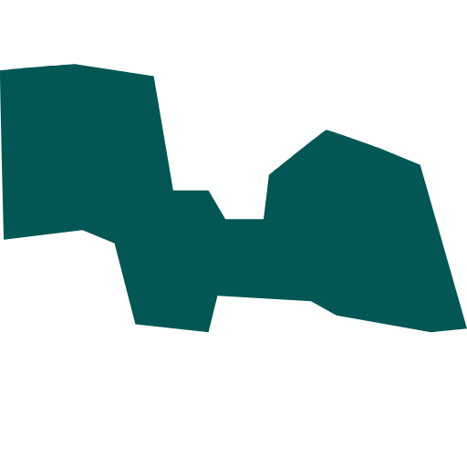
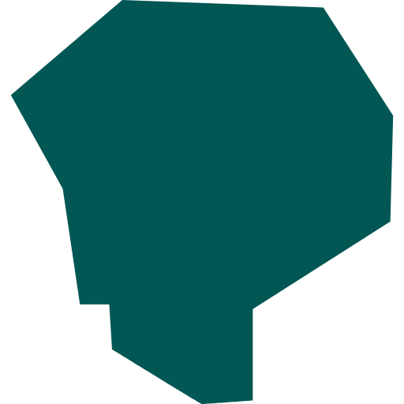

Schoonhoven

Boston

Odijk

Utrecht

Maastricht

In 2017 ben ik afgestudeerd aan het Grafisch Lyceum Utrecht als Game Artist. Samen met vier mede alumni heb ik Ember Glitch opgericht, waar ik altijd als 3D artist heb gewerkt. Daarnaast was ik gedurende drie jaar de praktijkopleider voor onze stagiairs.
Toen de coronapandemie uitbrak, heb ik geholpen met lesgeven op de game-afdeling van GLU. Om verder te kunnen in het onderwijs, ben ik Communication & Multimedia Design gaan studeren.
ik wil maatschappelijke problemen oplossen met communicatie en technologie. Sinds september 2022 ben ik ook lid van de academieraad bij CMD, waar ik me inzet voor de verbetering van het onderwijs en mijn eigen ontwikkeling. Vragen?
Vind me op LinkedIn of stuur me een e-mail!
span